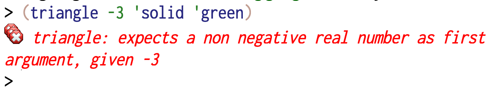
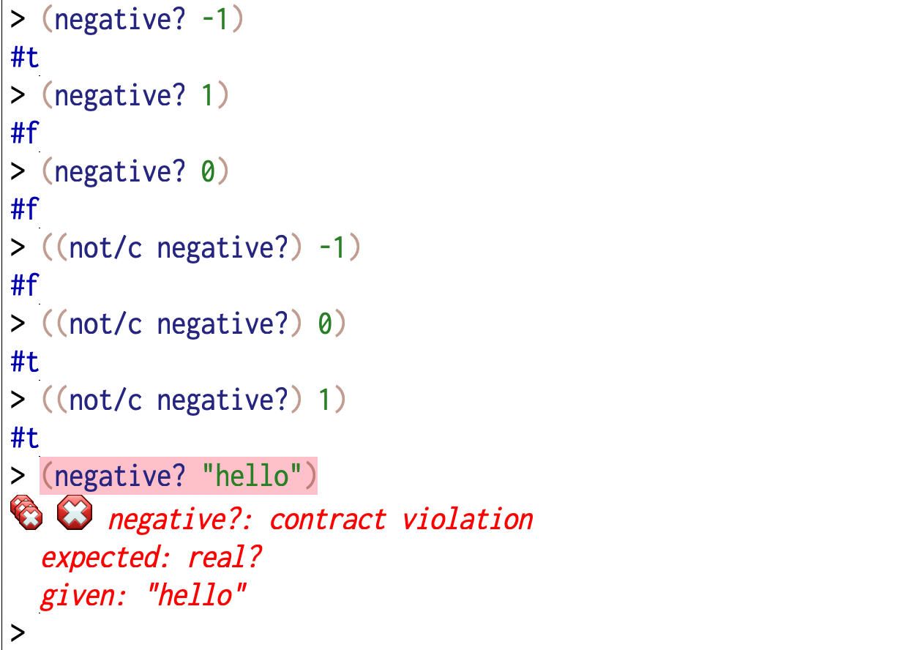
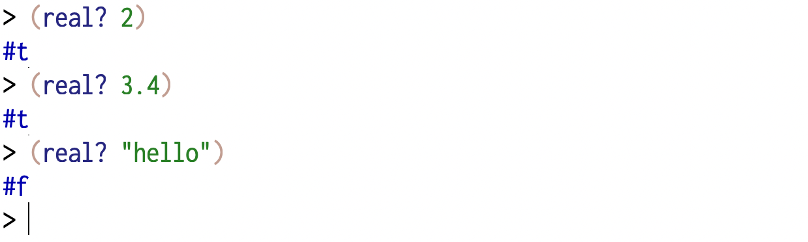
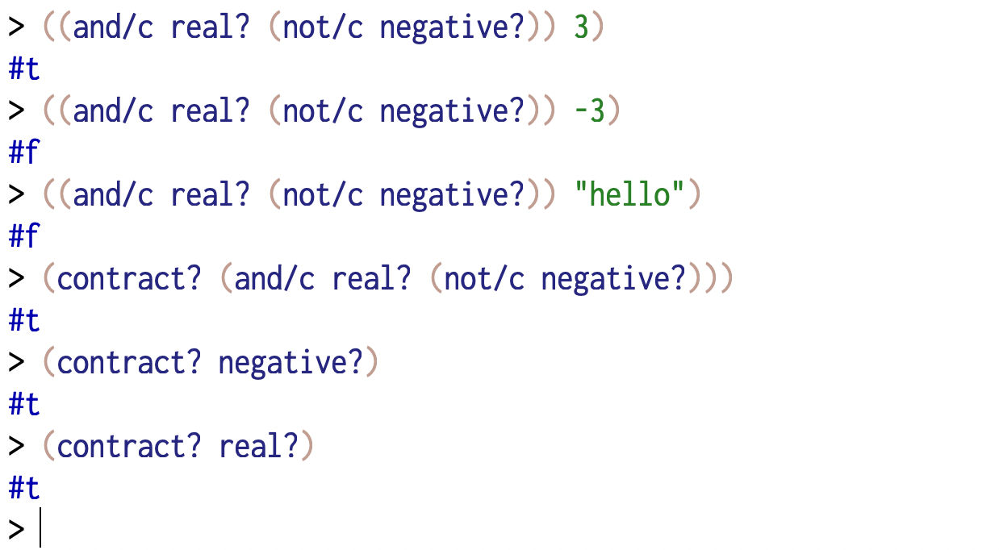

Assumptions and implications¶
When writing procedure and function definitions to express a problem’s solution, the HtDP documentation requirements help us clarify the meaning of each procedure/function definition before we even write it. Once we write it, we might live under the assumption that what we’ve written is according to what we documented.
How do we know that what we wrote meets our intended meaning?
This is the central question tackled by many different tools provided by nearly every programming language or system. These tools fall into the following kinds –
Unit testing libraries : These typically help check individual examples in a variety of contexts including extremities where failures are more likely and expected. In Racket, the package
rackunitprovides definitions that help write such “unit tests”. We saw some of these in use in How do we know it works? where we checked some expectations of our parsing definitions.Property testing : This refers to an approach of checking whether “properties” of a definition hold, by randomly generating inputs and testing the predicates associated with a property. There is some method to this “randomness” however, and once a failure occurs, property testing libraries also provide a facility known as “shrinking” where the failure case is reduced to a simple example that also exhibits the same kind of failure. These are therefore very useful if (and that’s a big if) the programmer is adept at discovering such properties to be tested.
Racket has packages quickcheck and rackcheck that provide definitions to help articulate properties of our definitions. After the QuickCheck paper was published with an implementation first for Haskell, it was quickly ported as a library into many programming languages (See wikipedia:QuickCheck).
Contracts : Contracts declared on identifiers help clarify the assumptions under which the identifiers can be meaningfully deployed and the implications they guarantee when meaningfully deployed. Operationally, they are checks inserted for the arguments and results of procedure definitions “provided” by modules, which ensure that all the necessary pre-conditions for a definition to apply (the assumptions) are met before the definition is used, and also that the definition indeed defines what it intends to define (the implication). These checks are run for each invocation of the definition, much like the way we inserted
(when <cond> <error>)expressions to check arguments.Racket provides definitions that make declaring such contracts an integral part of the language. We’ve seen contracts in the documentation, though we haven’t used them ourselves yet.
Type systems : Type systems offload the task of checking some kinds of pre-conditions and post-conditions of our definitions to a separate phase called the “type check” phase that is run only once when our program is compiled. While Racket attaches types to values, but not identifiers, type systems do their job by attaching types to identifiers and proving that declarations and inferences are consistent.
Racket has a sister language called typed racket which lets you declare argument and result types of your definitions and get them checked beforehand instead of every time a definition is used, like with contracts. Once your program passes the type check, it is almost as though your program will be run without explicitly checking these while running, thereby making it faster than with contracts by doing less work overall.
Pyret uses type declarations much like typed racket and you’ll encounter this in your ICT course, so we won’t deal with it in this course.
Dependent type systems : These are kind of “type systems on steroids”. While many languages have type systems that live in a separate universe from the universe of values, dependent type systems bridge the two and let you express types that are dependent on other known values. This has been shown to be a very powerful tool capable of modelling and proving complex mathematical results through what is known as the “Curry-Howard correspondence” or the “types are propositions and programs are proofs” correspondence. We won’t say much more about these in this course, except to say that if you’re interested in a career in mathematics, then learning about these via languages like Lean, Isabelle and Rocq, and following and participating in projects like Mathlib would be of great interest and use to you.
In languages like Lean, you can express a proof of correctness of your program before it even gets to run and when it passes the Lean compiler, your program has been proved to be correct according to the encoded specification. This means, the problem now shifts to ensuring that the specifications are encoded correctly!
We won’t be looking at these in detail in this course. However we’ll look at “contracts” a bit closer as it is involved in the documentation you’ll be referencing. Also, when you’re working with other languages, you should look for the equivalent of contracts to understand the behaviour of definitions you’re borrowing from a library. Furthermore, type systems are closely related to contracts in what they help clarify, though operationally they’re different.
The reason we won’t be looking at these in depth is that they all constitute a set of tools that turn the mechanism of computing on to validating what we’re expressing in programming languages. They do not alter the “meaning” of the programs we write [1] except to make clear to those making use of definitions written by others as to the conditions under which those definitions are usable and the guarantees they provide when used under those valid conditions.
Contracts¶
We saw in an earlier section when working with the “image” package from HtDP,
the documentation for triangle shown in Fig. 19.

Fig. 19 The Racket documentation for triangle from the 2htdp/image package.¶
We’re now going to dive a little into some of what this documentation tells us. In particular, pay attention to the following declaration –
side-length: (and/c real? (not/c negative?))
It is not hard to guess what this means. If we read negative? as a predicate
that tells us whether a particular number is negative or not, then we might
guess that (not/c negative?) expresses the idea of a “non-negative number”.
So the entire expression seems to be saying something like “a real number
that is not negative”. This tells us that when using the triangle definition,
the side-length argument can be either 0 or any real number greater than 0.
Indeed, if you (require 2htdp/image) and type the expression shown in
Fig. 20 into the interaction window, you’ll see an error
message as shown.

Fig. 20 What happens when passing a negative number for the side-length
argument of triangle.¶
Now how do we use “interrogation” to understand the (and/c real? (not/c negative?))
expression?

Fig. 21 What negative? means – it is just a “predicate” that tells you whether
its argument is a negative number or not.¶
From Fig. 21, we see that in the usage context where you’re giving a number as an argument, it tells you whether the number is a negative number or not. You can also see from the last interaction in Fig. 21 that it has a contract too – that its argument must be a real number and not something else.

Fig. 22 real? is a predicate that checks whether the argument is a real number.¶
So in order to establish that a given value is a “non-negative real number”,
we must combine the idea of a real number as captured by the predicate real?,
as shown in Fig. 22 with the constraint that it is (not/c negative?).
That is the job of the entire (and/c real? (not/c negative?)) construct,
which you can see can itself be used as a predicate to check a value,
as shown in Fig. 23.

Fig. 23 The (and/c ...) expression is a “contract” and contracts can be used as
predicates to check whether a value meets some criterion.¶
As you might’ve guessed by now, the /c in the names and/c and not/c
stand for “contract”, to distinguish them from the regular boolean operators
and and not which operate on boolean values and not on predicates.
You can read the introduction of Racket contracts to get an initial idea of
what constitutes a “contract”. In particular, symbols, numbers and strings are
valid as contracts that recognize themselves. Procedures with arity 1 (meaning
procedure that accepts one argument) are treated as “predicates” and are
expected to produce #f to indicate that the argument does not meet the
contract. This means you can write your own contracts as ordinary procedures.
For example –
(define (one-to-ten? n)
(and (integer? n) (>= n 1) (<= n 10)))
The above contract can also equivalently be given explicitly like this -
(define one-to-ten/c (or/c 1 2 3 4 5 6 7 8 9 10))
; or alternatively as any of the following --
; (define one-to-ten/c (and/c integer? (>=/c 1) (<=/c 10)))
; (define one-to-ten/c (and/c integer? (between/c 1 10)))
; (define one-to-ten/c (integer-in 1 10))
Though predicates like one-to-ten? that we write can now be used to declare
contracts, there is more to making them a full fledged contract, because we
also need to account for what happens when contracts fail and how to produce
error messages that the programmer can understand.
Note
For our purpose, the main take away from contracts is that for the person reading your code, they help clarify the assumptions under which your definition(s) can be used and, when used appropriately, the implications they guarantee. It is an added bonus that contracts are live and will check and report on these assumptions and guarantees wherever the definitions are used. Contracts are therefore a limited but useful way in which your program can be interrogated without you explicitly interrogating it. If a contract does not fail, all is well. However, when it does, you get rich information about what exact assumption or implication was not met.
Writing definitions with contracts¶
The most value provided by contracts is when you define your own words. You can use contracts to communicate to anyone using your definitions what kinds of arguments to supply and what kind of a value to expect when using the word as an operator (if you’re defining an abstraction, that is).
Function contracts describes how to define words along with contracts for their arguments and implied values.
To make definitions with contracts, you use define/contract instead of
define. For example, in The number guessing game, we checked an
argument of our procedure like this –
(define (play-number-guessing-game max-number)
(when (not (and (integer? max-number) (> max-number 1)))
(error "Expecting a positive integer > 1"))
...)
We can define this using contracts like this –
(require racket/contracts)
(define/contract (play-number-guessing-game max-number)
(-> (and/c integer? (>/c 1)) void?)
...)
The (-> ...) term first mentions contracts for all the arguments in
sequence, and finally the contract met by the result. In this case, there is no
explicit result and so we declare that as meeting the void? contract.
The (>/c 1) expression is to be read something like “contractually
greater than 1” and the contract is equivalent to the predicate
(lambda (n) (> n 1)).
The reason -> which looks like an “implication arrow” is used to declare
the contract for a function/procedure is because it is in essence saying “if
the assumptions for the arguments hold, then I grant that the implied result
will honour the result contract”. It is, of course, to the body of the
definition to fully conform to the contract laid out. If it fails in some
circumstance, the contract mechanism will call it out with an appropriate error
message.